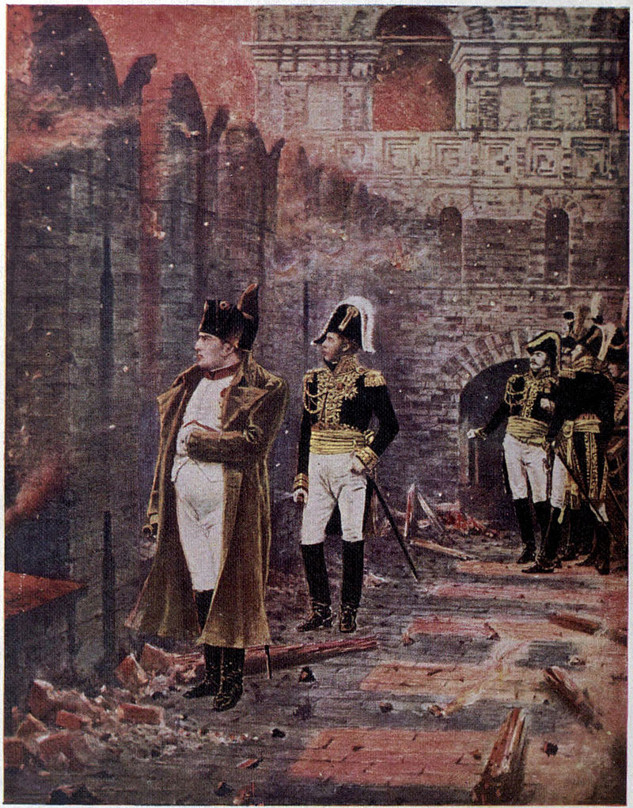
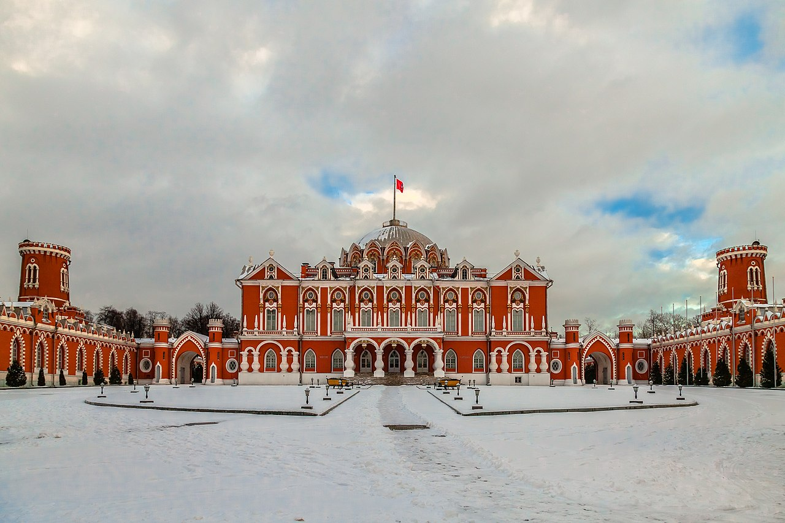
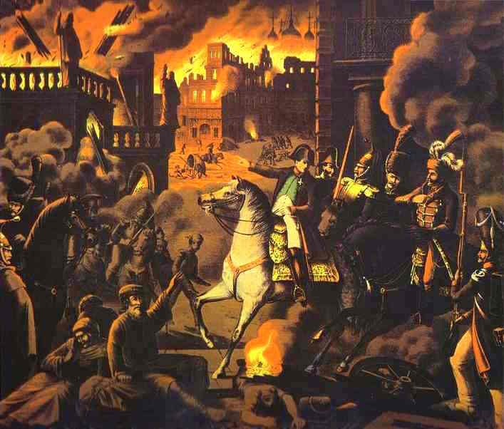
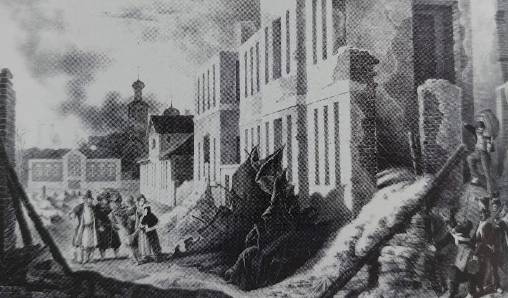
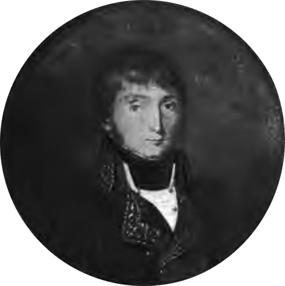

1812년 모스크바 대화재 (2) - 희극과 비극
게시: 2020-12-21T06:30:45+09:00
9월 15일 밤, 나폴레옹은 모스크바 곳곳에서 방화에 의한 화재가 발생했다는 보고를 받습니다. 시내 가옥의 2/3 정도가 빈 도시에서 병사들에 의해서든 부랑자들에 의해서든 약탈 행위가 일어나는 것은 드문 일이 아니었고, 약탈을 하다보면 화재가 발생할 수도 있는 일이었습니다. 나폴레옹은 대수롭지 않게 생각했습니다만 시내 주택들의 상당수가 목재로 지어진 것이라는 사실에 우려하면서 그가 이미 모스크바 주지사로 임명했던 모르티에 원수에게 불을 끄고 방화범들을 잡아들이라고 명령했습니다. 당황스럽게도 소방 펌프차를 한 대도 구할 수 없었던 병사들은 불을 끌 수는 없었지만 방화범들은 쉽게 잡아들일 수 있었습니다. 부랑자들인지 로스톱친의 부하들인지 정체는 불분명했지만, 이런 방화범들은 즉석에서 총살에 처해졌습니다. 나폴레옹은 러시아인들이 모스크바를 태우려 했다는 사실의 의미를 곱씹으며 크레믈린 궁전에 마련된 처소에서 잠자리에 들었습니다. 그런데 몇 시간 뒤인 16일 새벽 4시, 나폴레옹은 자신을 깨우는 시종들의 다급한 목소리에 일어나야 했습니다. 그 사이 때마침 불어닥친 강풍을 타고 불이 걷잡을 수 없이 번졌는데, 그 화염이 어느덧 크레믈린 궁전의 벽을 핥을 지경에 이른 것입니다. 불이 크레믈린 궁전까지 옮겨붙을 것 같지는 않았지만, 근위대 장교들은 크레믈린의 무기고에 많은 양의 흑색화약이 쌓여있다는 사실에 몹시 불안해졌습니다. 마침내 그들은 나폴레옹을 깨워 시외로 모시기로 했던 것입니다. 나폴레옹은 모양 빠지는 입성에 이어 모양 빠지게 시외로 도망쳐야 한다는 사실에 몹시 짜증을 냈지만, 결국 측근들의 끈질긴 읍소에 결국 성 밖으로 나가기로 했습니다.

(크레믈린 궁전의 성벽에서 시내의 화재를 바라보는 나폴레옹입니다.)
그가 마차를 타고 크레믈린 궁전을 나와 성 밖으로 나갈 때보니, 정말 상황은 심각했습니다. 도시는 온통 불길에 싸여 있었고, 모스크비 시내의 밤하늘은 수많은 불똥과 아직 붉게 빛나는 잉걸 부스러기가 세찬 바람을 타고 치솟아 올라 하늘을 가득 채우고 있었습니다. 일부 건물의 지붕이나 돔은 얇은 주석판으로 되어 있었는데, 그런 건물에 화재가 나면서 그런 주석판 지붕이 통째로 날아올라 강풍을 타고 먼 거리까지 날아가 떨어지기도 했습니다. 이런 비현실적인 광경을 보며 나폴레옹은 시외 몇 킬로미터 떨어진 곳에 위치한 페트로프스코예(Petrovskoye, Petrovsky) 궁전으로 몽진을 떠났습니다.

(모스크바 외곽에 위치한 이 페트로프스코예 궁전은 예카테리나 여제의 명에 의해 신고전주의 건축가인 카자코프(Matvey Kazakov)의 설계로 1776년부터 건설이 시작되어 1780년 11월 3일에 개관한 것입니다. 이 건물에서 묵은 사람 중 가장 유명 인물이 이날 밤 몽진을 떠난 나폴레옹이고, 예카테리나 여제는 1785년에 딱 1번 방문을 했다고 합니다.)

(1812년 모스크바 화재와 나폴레옹입니다. 성명 미상의 독일 화가의 그림입니다.)

(뷔르템부르크 출신으로서 당시 32세의 나이든 중위였던 Christian Wilhelm von Faber du Faur의 스켓치입니다. 화재로 인한 상승 기류로 인해 주석판금으로 된 지붕이 통째로 날아올라 거리에 떨어진 모습을 그려놓은 것입니다. 병사들 뿐만 아니라 숙녀가 섞인 모스크바 시민들이 그 모습을 보고 있는 모습이 이색적이지요. 파베르 뒤 포르는 처음엔 화가가 되려 했으나 나중에 군인이 된 사람으로서, 이 러시아 원정 때 그린 스켓치로 1816년 전시회를 열고 나중에는 판화로도 제작하여 꽤 성공을 거두었습니다. 군인으로서도 나쁘지 않은 성과를 내어 1849년엔 뷔르템부르크군에서 장군까지 승진했습니다.) 몇 년 뒤 세인트 헬레나 섬에서 회고록을 쓸 때 나폴레옹은 이 페트로프스코에 궁전에서 지켜본 모스크바 대화재의 광경에 대해 이렇게 적었습니다. "그건 내가 본 것 중 가장 웅장하고, 가장 숭고하며, 동시에 가장 무시무시한 광경이었다." 이렇게 생각한 사람은 나폴레옹 하나 뿐만이 아니었습니다. 네덜란드 출신의 판 데뎀(Anthony Boldewijn Gijsbert van Dedem) 장군도 이 화재에 대해 '인간이 볼 수 있는 광경 중 가장 아름다운 공포'라고 묘사하며 자신도 밤새도록 이 화재를 지켜보았다고 적었고 프랑스군 수석 군의관인 라리(Larrey)도 이때의 인상적인 광경에 대해 상세히 기록을 남겼습니다.

(판 데뎀(Anthony Boldewijn Gijsbert van Dedem) 장군입니다. 토박이 네덜란드 귀족이었던 그는 1812년 당시 38세였는데, 젊은 시절부터 프랑스 대혁명에 지지를 표명했습니다. 1798년 영국의 네덜란드 침공 때 영국군과 싸우다 포로가 되기도 했던 그는 네덜란드 왕이 된 루이 보나파르트의 신하가 되었다가, 루이가 왕위를 빼앗기고 네덜란드가 통째로 프랑스와 합병되면서 자연스럽게 프랑스군에 편입되어 장군까지 승진했습니다. 부르봉 왕가 이후에도 그는 프랑스군에서 계속 복무했습니다. 1816년 네덜란드가 독립왕국이 되면서 그는 네덜란드 시민권을 잃고 프랑스인으로 살아야 했습니다.) 이제 나폴레옹은 젊은 시절 적의 포탄이 휙휙 날아다니는 전장에서 태연히 앉아 있던 용감한 군인이 아니라 조금의 위험도 감내할 수 없는 지엄하신 황제였고, 따라서 위험한 현장을 떠나 안전한 곳으로 떠나야 했습니다. 그러다보니 결국 이런 화재에 대해서는 아무런 지도력을 발휘할 수 없었습니다. 나폴레옹을 따라 근위대 대부분도 페트로프스코예 궁전으로 물러났고, 주요 장군들도 시외로 대피하고 나니, 모스크바 시내는 그야말로 무법천지가 되어 버렸습니다. 일부 남아있던 모스크바 시민들은 그나마 불을 피할 수 있는 넓은 광장에 모여 우왕좌왕 했고, 그들이 물러난 빈집들을 아무런 통제를 받지 않은 병사들이 신나게 털었습니다. 앞서 언급했던 오두아르(Fantin des Odoards) 대위는 술에 취한 병사들이 밀가루를 담은 비단옷과 보드카를 넘치도록 담은 요강을 들고 몰려다니는 모습을 보며 고향에서 벌이던 사육제 축제의 가장 행렬을 떠올렸습니다.
이런 희극 와중에 비극도 있었습니다. 당시 모스크바 병원에는 스몰렌스크 전투에서 부상을 입고 실려왔던 부상병들이 잔뜩 있었는데, 모스크바 철수 때 버려졌던 이들은 이 대화재에서도 철저하게 버려졌습니다. 많은 수가 이 화재에서 목숨을 잃었고, 일부 병사들은 엉금엉금 병원 복도 바닥을 기어나와 살 길을 찾아야 했습니다. 광장에 몸을 피했던 모스크바 시민들도 희극의 주인공은 아니었습니다. 화재 속에서 급한 대로 귀중품을 챙겨나온 이들은 곧 술에 취한 그랑다르메 병사들의 약탈 대상이 되었습니다. 뒤늦게 온 병사들도 이미 가진 것을 다 털린 시민들을 약탈하려 했으나 정말 아무 것도 값나가는 것을 찾지 못하자 애꿎은 이들을 괜히 두들겨 팼습니다.

(불타는 모스크바에서 몽진하는 나폴레옹입니다. 러시아 화가가 그린 것입니다.)
이 화재는 사흘간 계속 되었습니다. 이미 16일 오후부터 화재는 조금씩 잦아들었으나, 나폴레옹이 크레믈린으로 되돌아올 정도로 시내 상황이 진정된 것은 18일이 되어서였습니다. 돌아온 것은 나폴레옹 뿐만이 아니었습니다. 쿠투조프의 러시아군을 따라 14일 새벽에 피난을 떠났던 일부 모스크바 시민들도 슬금슬금 시내로 돌아왔습니다. 물론 잿더미가 된 시내는 황량하기 그지 없었지만 그래도 전술적으로 보급 상황이 크게 바뀐 것은 없었습니다. 흔히 이 대화재로 인해 보급품 창고가 다 소실되는 바람에 나폴레옹이 식량 부족으로 어쩔 수 없이 후퇴를 했다고들 하지만, 그건 사실이 아니었습니다. 의외로, 주요 곡물 창고 등은 대화재에서 무사했고, 당장 그랑다르메의 보급이 위협받지는 않았습니다. 그러니까 로스톱친의 의도적인 방화는 대체적으로 실패했지만, 부랑자들과 프랑스군 병사들이 약탈을 하며 저지른 방화가 주된 피해를 입혔던 것 같습니다. 이 대화재로 인해 시내에서 돈이 될 만한 많은 귀중품들이 소실되었고 또 그보다 많은 귀중품들이 병사들의 짐짝 속으로 사라져 버린 것은 물론 큰 타격이었습니다. 나폴레옹의 그랑다르메는 당연히 돈을 무지막지하게 잡아먹는 기계였는데, 그 돈의 상당 부분은 점령지에서 세금 및 전쟁 보상금으로 뜯어내는 것이었습니다. 말이 세금 및 전쟁 보상금이지 실질적으로는 병참 장교의 지휘 하에 조직적으로 귀중품과 상품을 약탈하고 분류하여 현지에서 종군 상인들과 그 대리인 등에게 매각하는 것이 실제 행태였습니다. 그런데 돈이 될 만한 물건들이 이렇게 무질서한 약탈로 인해 병사들의 배낭 속으로 사라져버리면 그걸 다시 걷어들여 그랑다르메의 금고를 채우기는 사실상 불가능했습니다. 하지만 잿더미가 된 모스크바로 돌아온 나폴레옹과 고위 장성들이 받은 진짜 타격은 그런 사소한 문제들이 아니었습니다. Source : 1812 Napoleon's Fatal March on Moscow by Adam Zamoyski
en.wikipedia.org/wiki/Petrovsky_Palace
nl.wikipedia.org/wiki/Anthony_Boldewijn_Gijsbert_van_Dedem
en.wikipedia.org/wiki/Fire_of_Moscow_(1812)